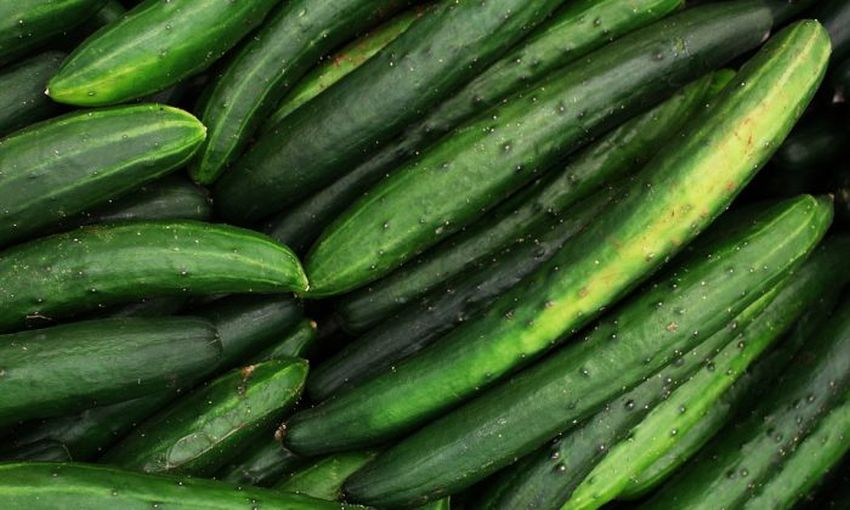

Okurka (Cucumis), též meloun, je rod rostlin z čeledi tykvovité. Jsou to plazivé nebo popínavé byliny s jednoduchými střídavými listy a žlutými pětičetnými květy. Plodem je dužnatá bobule. Rod zahrnuje asi 60 druhů a je rozšířen v tropech a subtropech Starého světa. Nejvíce druhů roste v Africe. Některé kulturní druhy zdomácněly i v Americe. Květy jsou opylovány zejména včelami. Některé druhy mají zajímavé způsoby šíření semen. Hospodářsky nejvýznamnějším druhem je okurka setá a meloun cukrový, v tropech se jako plodová zelenina pěstuje také kiwano a angurie. Řada divoce rostoucích druhů je jedovatá

Alan Deutsch, 2A